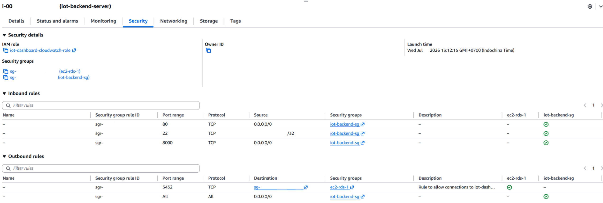
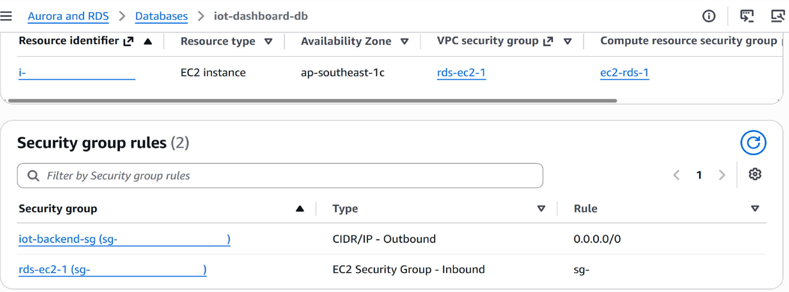
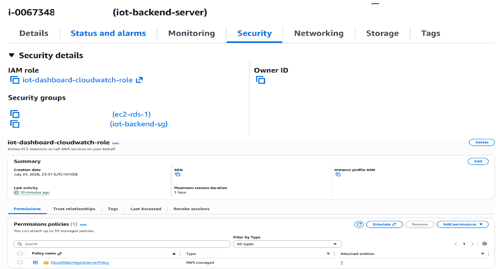
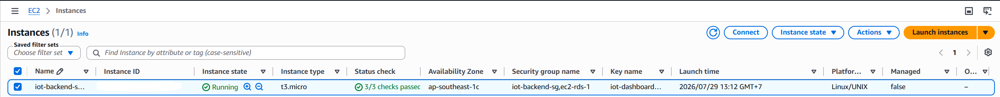
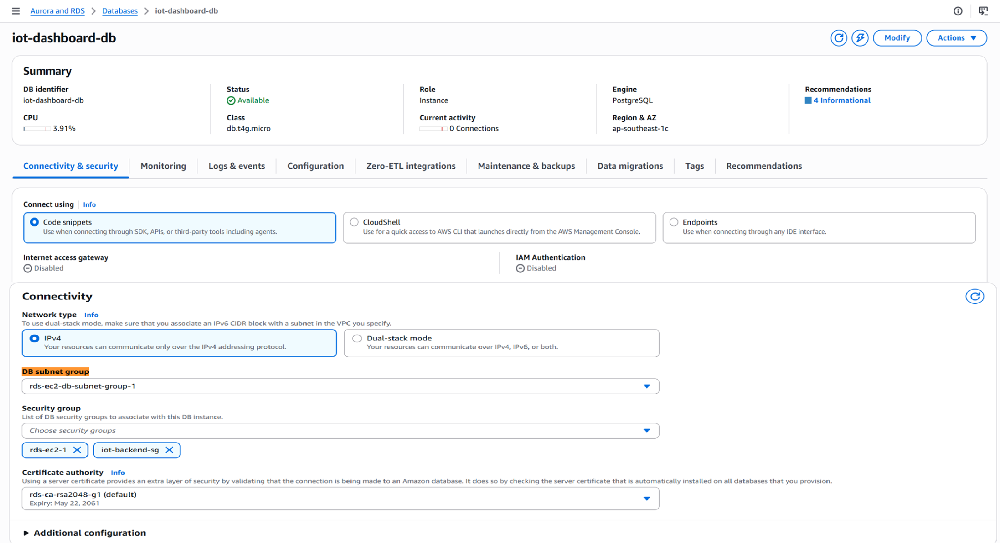

Xây dựng nền tảng mạng, quyền truy cập, tài nguyên tính toán, lưu trữ và cơ sở dữ liệu cho mô hình thử nghiệm. Trong ghi chú và ảnh chụp, hãy dùng giá trị giữ chỗ; không công khai ID tài khoản, mật khẩu, endpoint riêng tư hoặc khóa.
Trong AWS Console, chọn khu vực đã thống nhất cho dự án. Workshop dùng Asia Pacific (Singapore), ap-southeast-1 làm khu vực mặc định. Ghi lại các dải CIDR không chồng lấn cho VPC, một public subnet và ít nhất hai DB subnet thuộc hai Availability Zone.
Kết quả mong đợi: mọi tài nguyên bên dưới nằm trong cùng khu vực và dùng tiền tố tên đã thống nhất.
0.0.0.0/0 → Internet Gateway vào route table của public subnet.Kết quả mong đợi: EC2 có thể nhận địa chỉ IPv4 công khai, trong khi các subnet cơ sở dữ liệu vẫn nằm trong mạng riêng.
Tạo các Security Group của EC2 và RDS trong cùng VPC. Môi trường đã triển khai dùng iot-backend-sg cho lưu lượng backend, ec2-rds-1 cho kết nối từ EC2 tới RDS và rds-ec2-1 cho quy tắc phía RDS.
| Security Group | Loại | Nguồn | Mục đích |
|---|---|---|---|
iot-backend-sg |
SSH 22 | <ADMIN_IP>/32 |
Quản trị có giới hạn |
iot-backend-sg |
Custom TCP 8000 | 0.0.0.0/0 trong Workshop hiện tại |
Truy cập FastAPI trực tiếp để demo |
iot-backend-sg |
HTTP 80 | Quy tắc đang tồn tại trong group | Không tuyên bố đã triển khai Nginx hoặc reverse proxy |
ec2-rds-1 → rds-ec2-1 |
PostgreSQL 5432 | Tham chiếu EC2 Security Group | Chỉ EC2 tới RDS |
Trong Workshop, cổng 8000 được mở để frontend và YOLO UNO truy cập FastAPI backend. Khi đưa vào môi trường production, cần giới hạn nguồn truy cập, dùng HTTPS, reverse proxy và cơ chế xác thực. Quy tắc cổng 80 trong ảnh không chứng minh Nginx hoặc một reverse proxy khác đang chạy. RDS không mở trực tiếp cổng PostgreSQL 5432 cho 0.0.0.0/0; cơ sở dữ liệu chỉ nhận kết nối từ EC2 Security Group.
Hai ảnh dưới đây tách riêng quy tắc phía EC2 và quan hệ Security Group phía RDS, đồng thời đã che IP quản trị cùng các định danh nhạy cảm.

Hình 7a. Các quy tắc EC2 Security Group củaiot-backend-server: SSH chỉ cho phép địa chỉ quản trị /32; cổng 80 và 8000 được mở cho Workshop; lưu lượng PostgreSQL trên cổng 5432 đi tới RDS Security Group.

Hình 7b. Phần kết nối RDS hiển thịrds-ec2-1 là VPC Security Group của cơ sở dữ liệu và ec2-rds-1 là EC2 Security Group liên kết, qua đó xác nhận quan hệ giữa hai Security Group.
CloudWatchAgentServerPolicy khi CloudWatch Agent cần gửi metric hoặc log.iot-dashboard-cloudwatch-role, đúng với môi trường đã triển khai, rồi tạo instance profile.Không tạo access key dài hạn. Role đang dùng AWS-managed policy CloudWatchAgentServerPolicy, cho phép CloudWatch Agent gửi log và metric mà không cần ghi cố định AWS access key. Role chỉ cấp quyền; CloudWatch Agent được cài đặt riêng ở mục 5.9. Trước khi dùng trong production, cần rà soát và thu hẹp quyền thay vì mặc định policy được quản lý đã đáp ứng hoàn toàn nguyên tắc đặc quyền tối thiểu.
Trang Security của EC2 và phần chi tiết IAM Role xác nhận role đã được gắn cùng AWS-managed policy.

Hình 5. EC2 được gắn IAM Roleiot-dashboard-cloudwatch-role, và role này sử dụng CloudWatchAgentServerPolicy để CloudWatch Agent gửi log và metric mà không cần hard-code AWS access key.
iot-backend-server từ Linux AMI đã duyệt, dùng loại instance t3.micro.gp3 với dung lượng 10 GiB.3/3 status checks hiển thị trên Console.Ổ đĩa gốc EBS hiện ở trạng thái In-use với I/O bình thường. Volume EBS hiện tại chưa được mã hóa. Khi triển khai production, nên bật EBS encryption bằng AWS KMS để bảo vệ dữ liệu lưu trữ.
Ghi lại <EC2_PUBLIC_IP> nhưng không công khai khóa riêng, Instance ID hoặc thông tin key pair. Địa chỉ IP công khai có thể thay đổi sau khi dừng và khởi động lại EC2; Elastic IP mới chỉ là lựa chọn trong tương lai.
Trang EC2 Instances xác nhận loại instance, Availability Zone, trạng thái hoạt động và kết quả kiểm tra trạng thái.

Hình 4. Amazon EC2 instanceiot-backend-server chạy FastAPI backend ở trạng thái Running và vượt qua toàn bộ status checks.
db.t4g.micro và cấu hình lưu trữ đã duyệt.iot_dashboard.rds-ec2-db-subnet-group-1 và các RDS Security Group đã triển khai.<DB_PASSWORD>; không đưa mật khẩu thật vào ảnh hoặc Git.iot-dashboard-db chuyển sang Available tại ap-southeast-1c và lưu <RDS_ENDPOINT> ở nơi riêng tư.Không tuyên bố đã triển khai Multi-AZ, read replica, High Availability, RDS Proxy, public endpoint hoặc IAM database authentication vì bằng chứng hiện có chưa xác nhận các tính năng này.
Trang Summary và Connectivity & security của RDS xác nhận PostgreSQL engine, DB class, DB Subnet Group, Availability Zone và trạng thái tắt Internet access gateway.

Hình 6. Amazon RDS for PostgreSQLiot-dashboard-db ở trạng thái Available, sử dụng DB Subnet Group rds-ec2-db-subnet-group-1 và tắt Internet access gateway.
Kết nối từ Windows PowerShell:
ssh -i "$env:USERPROFILE\.ssh\<KEY_FILE>.pem" <EC2_USER>@<EC2_PUBLIC_IP>
Từ EC2 Linux Bash, kiểm tra DNS và TCP:
getent hosts <RDS_ENDPOINT>
nc -vz <RDS_ENDPOINT> 5432
Nếu chưa có nc, hãy cài gói netcat phù hợp với bản phân phối Linux. Kết nối TCP thành công chỉ xác nhận route và Security Group hoạt động; kết quả này chưa chứng minh thông tin đăng nhập cơ sở dữ liệu là chính xác.
Các hình trên cung cấp bằng chứng đã che thông tin nhạy cảm về trạng thái Running của EC2, IAM Role đã gắn, trạng thái Available của RDS, DB Subnet Group và quy tắc Security Group ở cả hai phía. Cần lưu riêng kết quả kiểm tra cổng từ EC2 tới RDS và thông tin chi tiết của volume EBS.
| Hiện tượng | Nội dung cần kiểm tra |
|---|---|
| SSH hết thời gian chờ | IP công khai, route table, Internet Gateway, <ADMIN_IP>/32 và tường lửa cục bộ |
| SSH từ chối quyền | Tài khoản đăng nhập và quyền của khóa trên máy cục bộ; không mở rộng SG để xử lý lỗi khóa |
| RDS hết thời gian chờ | Endpoint/khu vực, route của DB subnet, nguồn trong RDS SG và network ACL |
| RDS từ chối kết nối | Thông tin đăng nhập, đúng cổng và cơ sở dữ liệu đang ở trạng thái Available |
| EC2 không gửi được metric | IAM instance profile đã gắn và kết nối HTTPS đi ra |
| Trình duyệt không tới cổng 8000 | Địa chỉ bind, trạng thái dịch vụ, EC2 SG và mạng của máy khách |
Tiếp theo: triển khai FastAPI và kết nối PostgreSQL.